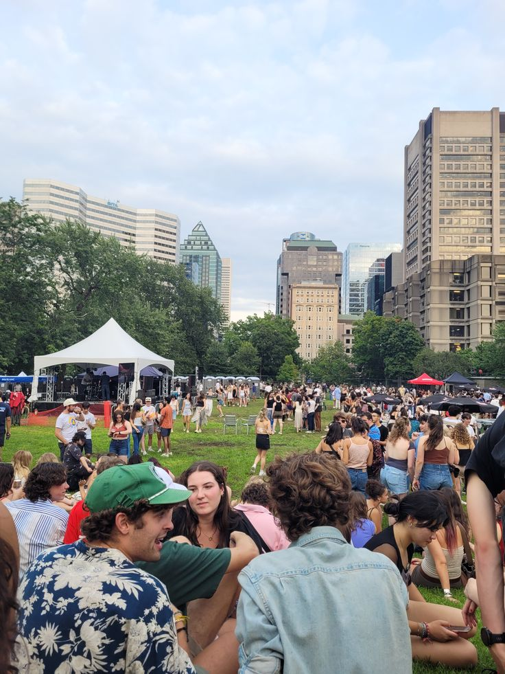

КОНКУРС
Премия «Студент года»
Федеральный конкурс, где отмечают не только отличников, но и тех, кто вкладывается в науку, культуру, спорт и добровольчество.
Федеральное студенческое объединение
Площадка для студентов, которые хотят расти, запускать проекты и приносить реальную пользу университету и стране.
— это пространство для активных, инициативных и целеустремлённых студентов. Здесь каждый может проявить себя, реализовать идеи и стать частью яркой студенческой жизни.
Площадка для общения и развития студенческого сообщества
Доступ к лучшим проектам и инициативам для студентов со всей страны
Объединение и обмен лучшими практиками студенческой активности
Возможность создавать собственные проекты и получать поддержку
Выбирай одно направление, комбинируй несколько или приди со своей идеей — формат участия гибкий, а нагрузка согласуется индивидуально.
Федеральный конкурс, где отмечают не только отличников, но и тех, кто вкладывается в науку, культуру, спорт и добровольчество.
Подготовка и официальная работа общественным наблюдателем — структурный опыт, который ценят и в вузе, и при трудоустройстве.
Помогаем собрать заявку на грантовый конкурс, оформить бюджет и защитить идею. От экологических акций до IT‑решений.
Танцы, вокал, театр, медиа. Если хочется на сцену или за кулисы — это формат, где можно попробовать себя без давления.
Формально всё просто, но мы всегда предлагаем созвон или встречу — чтобы понять, что тебе интересно, и подсказать, с чего лучше начать.
Обычно это 5–7 вопросов: кто ты, чем занимаешься и в каком формате хочешь участвовать. На это уйдёт не больше пяти минут.
Куратор объяснит текущие задачи клуба, расскажет о ближайших проектах и поможет выбрать направление, которое зайдёт именно тебе.
После согласования тебя добавят в рабочие чаты, расскажут про расписание встреч и дадут первые небольшие задачи.

В клубе прошёл проектный интенсив. Участники разработали идеи собственных проектов и получили рекомендации от экспертов.

Студенты клуба приняли участие во всероссийском форуме. Активисты представили свои инициативы и обменялись опытом.

Открыт набор в Студенческий клуб РСМ. Присоединиться могут все желающие — впереди новые мероприятия и возможности.
Будь в курсе жизни Студенческого клуба РСМ: мероприятия, проекты, успехи участников и новые возможности.
Если остались вопросы — можно написать, позвонить или зайти лично.